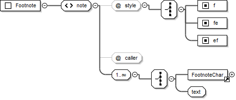

Elements¶
<usx>¶
| Element: | usx * empty |
|---|---|
| Added: | 1.0 |
| Use: | Root element for USX scripture file. |
| @version: | USX version identifier. * xsd:decimal Only the specific USX version number for scripture data contained in the file is allowed (1.0, 2.0, 2.5 etc.). |
| Parent: | ROOT |
The following schema diagram displays the document structure of a USX scripture file.
Diagram and Text Sample

<usx version="2.5">
<book>¶
| Element: | book * xsd:string |
|---|---|
| Added: | 1.0 |
| Use: | Brief description of scripure translation. |
| @code: | 3-letter book code for the scripture or peripheral content in the USX document. * one of bookCode |
| @style: | Content type. * id |
| Valid in: | Book Identification |
| Parent: | <usx> |
Diagram and Text Sample - Matthew (GNT)

<book code="MAT" style="id">English: Good News Translation 2nd Ed. 1992</book>
<chapter>¶
Note
Background on <chapter> and <verse> as ‘milestones’
A milestone type markup is required when a document has two or more structures that interact in a non-hierarchical manner. This is also referred to as overlapping or concurrent markup. A principle example of this type of overlapping structure in scripture text is the contrast between 1) the paragraph structures used to express the discourse / narrative of the text and 2) the division of the text into books, chapters and verses. In scripture texts encoded using USX (and similarly also in USFM), the paragraph level markup forms the main structure of the document, while chapter and verse elements are empty milestones which identify the location where the chapter or verse begins.
Note
Accurately identifying chapter text within the scripture paragraph structure
USX 3.0 adds a pair of attributes to <chapter/> (sid and eid) which are used to unambiguously identify the start and end position for a specific chapter text within the scripture discourse structure.
IMPORTANT: In USX 3.0 a <chapter/> milestone is required at the start and at the end of the verse text, with corresponding sid and eid attributes. In previous versions of USX, only a <chapter/> start milestone was required.
| Element: | chapter * empty |
|---|---|
| Added: | 1.0 |
| Use: | Initial element within each chapter text division. Marks the start of a new chapter. |
| @style: | Content type. * c |
| @number: | Current chapter number (sequential; according to versification definition for the scripture text). * xsd:integer |
| @altnumber: | Alternate chapter number. (Used to supply the chapter number for an alternate versification scheme. This is required when the numbering for an alternate versification tradition need to be maintained within the same translation text.) xsd:string of pattern [0-9]+\w?(\u200F?[\-,][0-9]+\w?)* |
| @pubnumber: | Published chapter character. (The chapter character(s) (a string - number, letter or both) which should be displayed in a published version of the scripture text, where the published chapter character is different than the sequential chapter number used within the translation editing environment, as defined by the project versification.) * xsd:string |
| @sid: | Chapter start identifier. * (required at chapter start milestone) A standard book + chapter scripture reference. Book names must be one of bookCode. xsd:string of pattern [A-Z1-4]{3} ?[0-9]+ |
| @eid: | Chapter end identifier. * (required at chapter end milestone) A standard book + chapter scripture reference. Book names must be one of bookCode. xsd:string of pattern [A-Z1-4]{3} ?[0-9]+ |
| Valid in: | Chapter Content |
| Parent: | <usx> |
Diagram and Text Sample


Code examples for chapter and verse are provided after the definition for element verse (below).
<verse>¶
Note
Accurately identifying verse text within the scripture paragraph structure
USX 3.0 adds a pair of attributes to <verse/> (sid and eid) which are used to unambiguously identify the start and end position for a specific verse text within the scripture discourse structure. A companion attribute vid is added to <para> and <table> in order to re-identify the current verse when the previous <para> or <table> has closed prior the end of the verse text.
IMPORTANT: In USX 3.0 a <verse/> milestone is required at the start and at the end of the verse text, with corresponding sid and eid attributes. In previous versions of USX, only a <verse/> start milestone was required.
| Element: | verse * empty |
|---|---|
| Added: | 1.0 |
| Use: | Marks the start of a new verse. |
| @style: | Content type. * v |
| @number: | Current verse number (sequential; according to versification definition for the scripture text). * xsd:string of pattern [0-9]+\w?(\u200F?[\-,][0-9]+\w?)* |
| @altnumber: | Alternate verse number. (Used to supply the verse number for an alternate versification scheme. This is required when the numbering for an alternate versification tradition need to be maintained within the same translation text.) xsd:string of pattern [0-9]+\w?(\u200F?[\-,][0-9]+\w?)* |
| @pubnumber: | Published chapter character. (The chapter character(s) (a string - number, letter or both) which should be displayed in a published version of the scripture text, where the published chapter character is different than the sequential chapter number used within the translation editing environment, as defined by the project versification.) xsd:string |
| @sid: | Verse start identifier. * (required at verse start milestone) A standard book + chapter + verse scripture reference. Book names must be one of bookCode. Chapter verse separator is always a colon (:). xsd:string of pattern [A-Z1-4]{3} ?[a-z0-9\-,:]* |
| @eid: | Verse end identifier. * (required at verse end milestone) A standard book + chapter + verse scripture reference. Book names must be one of bookCode. Chapter verse separator is always a colon (:). xsd:string of pattern [A-Z1-4]{3} ?[a-z0-9\-,:]* |
| Valid in: | Chapter Content |
| Parents: | <para>, <row>, <cell> |
Diagram and Text Samples


chapter and verse - Genesis 1:21-25
<chapter number="1" style="c" sid="GEN 1" />
<para style="s">The Story of Creation</para>
...
<para style="p">
<verse number="21" style="v" sid="GEN 2:21" />Then the <char style="nd">Lord</char> God
made the man fall into a deep sleep, and while he was sleeping, he took out one of the
man's ribs and closed up the flesh.<verse eid="GEN 2:21" />
<verse number="22" style="v" sid="GEN 2:22" />He formed a woman out of the rib and brought
her to him.<verse eid="GEN 2:22" />
<verse number="23" style="v" sid="GEN 2:23" />Then the man said,
</para>
<para style="q1" vid="GEN 2:23">“At last, here is one of my own kind—</para>
<para style="q1" vid="GEN 2:23">Bone taken from my bone, and flesh from my flesh.</para>
<para style="q1" vid="GEN 2:23">‘Woman’ is her name because she was taken out of man.”
<verse eid="GEN 2:23" />
</para>
<para style="m">
<verse number="24" style="v" sid="GEN 2:24" />That is why a man leaves his father and mother
and is united with his wife, and they become one.<verse eid="GEN 2:24" />
</para>
<para style="p">
<verse number="25" style="v" sid="GEN 2:25" />The man and the woman were both naked, but
they were not embarrassed.<verse eid="GEN 2:25" />
</para>
...
<chapter eid="GEN 1" />
<chapter number="2" style="c" sid="GEN 2" />
An additional six chapters appear interspersed in Esther in the Septuagint. There are 3 common approaches to handling the Greek additions (and many additional variations!). Although Paratext requires sequential chapter and verse numbers to be used within the translation editing environment – as defined by the project versification – in numerous places this is not the string to be published for the chapter and/or verse identifiers at these locations. Examples from Esther Greek are shown below to highlight the application of the @pubnumber attribute for chapter and verse.
The following example of the text for Esther Greek chapter 1 is taken from the English Good News Bible text. This text follows a versification scheme for Esther Greek which may be referred to as “modern scholars” configuration. Some versions following this scheme include English Good News, French La Bible en francais courant, and German Gute Nachricht Bible.
- In the first portion of this example, you can see a chapter element with the sequential @number “1” which includes a @pubnumber “A”. The “A” should be presented to the reader.
- In the second portion of this example, a para element with @style “cp” is found. Although a sequential chapter element is not present at this location, a chapter heading or other appropriate chapter style showing “1” should be presented to the reader.
- In the second portion of this example you can also see verse elements with sequential @number “18-19”, “20”, “21”, “22”. The corresponding @pubnumber “1-2”, “3”, “4”, and “5” should be presented to the reader.
chapter and verse - ESG 1, showing chapter, @pubnumber A, and cp 1; verse 18-19 @pubnumber 1-2 etc.
<chapter number="1" style="c" pubnumber="A" sid="ESG 1" />
<para style="s">Mordecai's Strange Dream</para>
<para style="p">
<verse number="1-3" style="v" sid="ESG 1:1-3" />Mordecai, a Jew who belonged to the tribe of
Benjamin, was taken into exile, along with King Jehoiachin of Judah, when King Nebuchadnezzar
of Babylonia captured Jerusalem...<verse eid="ESG 1:1-3" /></para>
...
<para style="cp">1</para>
<para style="s">Queen Vashti Defies King Xerxes</para>
<para style="p">
<verse number="18-19" style="v" pubnumber="1-2" sid="ESG 1:18-19" />These things happened
in the time of King Xerxes, who ruled 127 provinces, all the way from India to Ethiopia,
from his royal throne in Susa, Persia's capital city.<verse eid="ESG 1:18-19" />
<verse number="20" style="v" pubnumber="3" sid="ESG 1:20" />In the third year of his reign,
the king gave a banquet for all his advisers, the representatives of the other countries, the
noblemen from Persia and Media, and the governors of the provinces.<verse eid="ESG 1:20" />
<verse number="21" style="v" pubnumber="4" sid="ESG 1:21" />For six whole months he made a
show of the riches of the imperial court with magnificent and expensive celebrations.
<verse eid="ESG 1:21" />
</para>
<para style="p">
<verse number="22" style="v" pubnumber="5" sid="1:22" />After the feast the king gave a banquet
for the people of other nations who were in the city...<verse eid="ESG 1:22" />
</para>
...
The following example is taken from the English Contemporary English Version (CEV) text, which applies a different versification scheme to Esther Greek following the Vulgate. The NRSV Anglicised Edition is another example following this scheme.
chapter and verse - ESG 1, showing chapter 1 @pubnumber 11, cp 12, and 1; verse 1-3 @pubnumber 2-4, verse 4 @pubnumber 5, verse 12 @pubnumber 1 etc.
<chapter number="1" style="c" pubnumber="11" sid="ESG 1"/>
<para style="ms1">Addition A</para>
<para style="s1">Mordecai's Dream</para>
<para style="p">
<verse number="1-3" style="v" pubnumber="2-4" sid="ESG 1:1-3" />Mordecai son of Jair was a Jew
from the Benjamin tribe, and he lived in the city of Susa in Persia. Mordecai had been taken
away from Jerusalem as a prisoner, when King Nebuchadnezzar of Babylonia had captured King
Jehoiachin. ...</para>
<para style="p" vid="ESG 1:1-3">In Mordecai's dream,<verse eid="ESG 1:1-3" />
<verse number="4" style="v" pubnumber="5" sid="ESG 1:4" /> there was confusion and unrest all
over the world. He heard crashing thunder, and the earth shook with an earthquake
<verse eid="ESG 1:4" /> <verse number="5" style="v" pubnumber="6" sid="ESG 1:5" />as two huge
dragons went toward each other, ready to fight<verse eid="ESG 1:5" />...
</para>
...
<verse number="11" style="v" pubnumber="12" sid="ESG 1:11" /> Mordecai woke up, but he knew
that in his dream he had seen what God was planning to do. And so, Mordecai thought about
his dream all day, trying to understand exactly what it meant.<verse eid="ESG 1:11" />
</para>
<para style="cp">12</para>
<para style="s1">Mordecai <optbreak /> Saves the King's Life</para>
<para style="p">
<verse number="12" style="v" pubnumber="1" sid="ESG 1:12" />That night, Mordecai was in the
palace courtyard. He was resting not far from Gabatha and Tharra, the two officers who were
on guard duty.<verse eid="ESG 1:12" />
<verse number="13" style="v" pubnumber="2" sid="ESG 1:13" /> Mordecai overheard them talking,
and as he listened carefully, he realized they were planning to murder King Artaxerxes.
<verse eid="ESG 1:13" />
</para>
...
<para style="ms1">End of Addition A</para>
<para style="cp">1</para>
<para style="s1">Queen Vashti Disobeys <optbreak /> King Artaxerxes</para>
<para style="p">
<verse number="18-20" style="v" pubnumber="1-3" sid="ESG 1:18-20" />King Artaxerxes lived
in his capital city of Susa and ruled 127 provinces from India to Ethiopia.
<verse eid="ESG 1:18-20" />
</para>
An example from Psalms (modified French TOB) showing an alternate chapter and verse numbering scheme encoded within the text.
chapter and verse - PSA 42, showing chapter @altnumber and verse @altnumber
<chapter number="42" style="c" altnumber="41" sid="PSA 42"/>
<para style="ms1">DEUXIÈME LIVRE</para>
<para style="mr">(Ps 42–72)</para>
<para style="s1">PSAUME 42</para>
<para style="d">
<char style="va">1</char> Du chef de chœur. Instruction des fils de Coré.</para>
<para style="q1">
<verse number="1" style="v" altnumber="2" sid="PSA 42:1" /> Comme une biche se
tourne</para>
<para style="q1" vid="PSA 42:1">vers les cours d'eau,</para>
<para style="q1" vid="PSA 42:1">ainsi mon âme se tourne</para>
<para style="q1" vid="PSA 42:1">vers toi, mon Dieu.<verse eid="PSA 42:1" /></para>
<para style="q1">
<verse number="2" style="v" altnumber="3" sid="PSA 42:2" /> J'ai soif de Dieu,</para>
<para style="q1" vid="PSA 42:2">du Dieu vivant:</para>
<para style="q1" vid="PSA 42:2">Quand pourrai-je entrer</para>
<para style="q1" vid="PSA 42:2">et paraître face à Dieu?<verse eid="PSA 42:2" /></para>
<para>¶
| Element: | para xsd:string |
|---|---|
| Added: | 1.0 |
| Use: | Paragraph content. |
| @style: | Content type. * Permitted values vary for each document division. The para @style types list presents an itemization of style values by category (paragraphs, poetry, titles etc.) and indicates the document divisions in which each type is valid. |
| @vid: | Verse identifier. Required to re-identify the current verse whenever the previous para or table closed prior the end of the current verse text. A standard book + chapter + verse scripture reference. Book names must be one of bookCode. Chapter verse separator is always a colon (:). xsd:string of pattern [A-Z1-4]{3} ?[a-z0-9\-,:]* |
| Valid in: | Book Headers, Book Titles, Book Introduction, Book Introduction End Titles, Book Chapter Label, Chapter Content |
| Parents: | <usx> |
Diagram and Text Sample - Mark 1.1; Matthew 5.1,14-16 (GNT)

<para style="p">
<verse number="1" style="v" sid="MRK 1:1" />This is the Good News about Jesus Christ, the Son
of God.<verse eid="MRK 1:1"/> <verse number="2" style="v" sid="MRK 1:2" />It began as the prophet
Isaiah had written:</para>
<para style="q1" vid="MRK 1:1">“God said, ‘I will send my messenger ahead of you</para>
<para style="q2" vid="MRK 1:1">to open the way for you.’</para>
<para style="q1">
<verse number="3" style="v" sid="MRK 1:3" />Someone is shouting in the desert,</para>
<para style="q2" vid="MRK 1:3">‘Get the road ready for the Lord;</para>
<para style="q2" vid="MRK 1:3">make a straight path for him to travel!’”</para>
<para style="s">The Sermon on the Mount</para>
<para style="p">
<verse number="1" style="v" sid="MAT 5:1" />Jesus saw the crowds and went up a hill, where he
sat down. His disciples gathered around him,<verse eid="MAT 5:1" />
<verse number="2" style="v" sid="MAT 5:2" />and he began to teach them:<verse eid="MAT 5:2" />
</para>
<para style="s">True Happiness</para>
<para style="r">(Luke 6.20-23)</para>
<para style="q1">
<verse number="3" style="v" sid="MAT 5:3" />“Happy are those who know they are spiritually poor;
</para>
<para style="q2" vid="MAT 5:3" />the Kingdom of heaven belongs to them!<verse eid="MAT 5:3" /></para>
<para style="q1">
<verse number="4" style="v" sid="MAT 5:4" />“Happy are those who mourn;</para>
<para style="q2" vid="MAT 5:4" />God will comfort them!<verse eid="MAT 5:4" /></para>
<table>¶
| Element: | table empty |
|---|---|
| Added: | 1.0 |
| Use: | Contains <row> and <cell> child elements which compose the structure of a USX <table>. Tables are composed of a vertical sequence of one or more rows. Rows are composed of a horizontal sequence of one of more cells. |
| @vid: | Verse identifier. Required to re-identify the current verse when the previous para closed prior the end of the current verse text. A standard book + chapter + verse scripture reference. Book names must be one of bookCode. Chapter verse separator is always a colon (:). xsd:string of pattern [A-Z1-4]{3} ?[a-z0-9\-,:]* |
| Valid in: | Book Introduction, Chapter Content |
| Parents: | <usx> |
Diagram

<row>¶
| Element: | row (* within <table>) empty |
|---|---|
| Added: | 1.0 |
| Use: | Contains a horizontal sequence of table <cell> elements. The horizontal position of a table cell relates to its corresponding table column. |
| Valid in: | Any valid <table> |
| Parents: | <table> |
Diagram

<cell>¶
| Element: | cell (* within <row>) xsd:string |
|---|---|
| Added: | 1.0 (updated 3.0 - column spanning) |
| Use: | Table cell content. Contains the cell text and and child elements. |
| @style: | Cell column and alignment (legacy). * th# | thr# | tc# | tcr# The variable represents the table column number. See “About cell @style” note below. |
| @align: | Cell alignment. * start | center | end Represents “left”, “center”, and “right” respectively in left-to-right direction texts, and “right”, “center”, “left” in right-to-left direction texts. |
| @colspan: | An integer indicating how many columns the current cell should span in a rendered view. |
| Valid in: | Any valid <row> |
| Parents: | <row> |
Note
Like the @style attribute applied to other USX elements, the cell @style value is a reference to the source text USFM marker in Paratext, from which USX encoded text is often derived. In USFM text, the table cell markers define the column to which they belong. The variable # represents the table column number. Strictly speaking @style is redundant information in USX. It is used by Paratext for round-tripping USX to USFM. In USX, the position of a <cell> in its sequence defines its respective column, and the @align attribute is the primary source of cell alignment information.
Diagram and Text Sample - NUM 2:3-9

<table>
<row style="tr">
<cell style="th1" align="start">Tribe </cell>
<cell style="th2" align="start">Leader </cell>
<cell style="th3" align="start">Number</cell>
</row>
<row style="tr">
<cell style="tc1" align="start">Judah </cell>
<cell style="tc2" align="start">Nahshon son of Amminadab </cell>
<cell style="tcr3" align="end">74,600</cell>
</row>
<row style="tr">
<cell style="tc1" align="start">Issachar </cell>
<cell style="tc2" align="start">Nethanel son of Zuar </cell>
<cell style="tcr3" align="end">54,400</cell>
</row>
<row style="tr">
<cell style="tc1" align="start">Zebulun </cell>
<cell style="tc2" align="start">Eliab son of Helon </cell>
<cell style="tcr3" align="end">57,400</cell>
</row>
<row style="tr">
<cell style="tc1" colspan="2" align="end">Total: </cell>
<cell style="tcr3" align="end">186,400</cell>
</row>
</table>
<char>¶
| Element: | char xsd:string |
|---|---|
| Added: | 1.0 |
| Use: | An element for marking character level content types within para, table cell and note elements. |
| @style: | Content type. * Permitted values vary for each document division. The char @style types list presents an itemization of style values by category and indicates the document divisions in which each type is valid. |
| @lemma: | Valid when used together with selected @style types. |
| @strong: | Valid when used together with selected @style types. |
| @srcloc: | Valid when used together with selected @style types. |
| @link-href: | |
| @link-title: | |
| @link-id: | |
| Valid in: | Book Titles, Book Introduction, Book Introduction End Titles, Book Chapter Label, Chapter Content A limited subset of @style types are valid within note (Footnote, CrossReference) |
| Parents: | <para>, <cell>, <note> |
Diagram and Text Sample - Genesis Introduction; 2.7; Mark 1.1 (GNT)

<para style="ip">The name <char style="bk">Genesis</char> means “origin.”
Then the <char style="nd">Lord</char> God took some soil from the ground and formed a man
<para style="p">
<verse number="1" style="v" sid="MRK 1:1" />This is the Good News about Jesus Christ, the Son
of God.<verse eid="MRK 1:1"/> <verse number="2" style="v" sid="MRK 1:2" />It began as the
prophet Isaiah had written:</para>
<para style="q1" vid="MRK 1:1">
<char style="qt">“God said, ‘I will send my messenger ahead of you</char></para>
<para style="q2" vid="MRK 1:1">
<char style="qt">to open the way for you.’</char></para>
...
<ms>¶
USX 3.0 provides the <ms/> element for indicating the start and ending milestones for a span of text, where the boundaries of the content being marked may cross the boundary of a curently open paragraph (usually a <para> element).
An milestone type markup is required when a document has two or more structures that interact in a non-hierarchical manner. This is also referred to as overlapping or concurrent markup. A principle example of this type of overlapping structure in scripture text is the contrast between 1) the paragraph structures used to express the discourse / narrative of the text and 2) the division of the text into books, chapters and verses. In scripture texts encoded using USX (and similarly also in USFM), the paragraph level markup forms the main structure of the document, while chapter and verse markers are empty milestones which identify the location where the chapter or verse begins.
Another example of an overlapping structure exists when there is a need to indicate the start and end of the quotations of the “actors” who are speaking within the text. These spans of text will commonly cross paragraph boundaries.
| Element: | ms empty A milestone is always an empty element and should be written using the self-closing syntax, like <ms/>. |
|---|---|
| Added: | 3.0 |
| Use: | For indicating a specific milestone position within the text, or the start and ending milestones for a span of text, and where the boundaries of the content being marked may cross one or more paragraph boundaries. |
| @style: | Milestone type. * The ms @style types list presents an itemization of milestone styles in the current version of USX. |
| @sid: | A unique identifier which can be used to unambiguously identify the starting milestone, and to clearly associate the starting milestone with the ending milestone (eid). The sid can be composed of any mixture of numbers, letters, and underscores, and should be a unique sid throughout the scripture text. |
| @eid: | A unique identifier which can be used to unambiguously identify the ending milestone, and to clearly associate the ending milestone with the starting milestone (sid). If a sid attribute is used for the starting milestone in a milestone pair, the ending milestone must include eid. |
| Valid in: | Book Titles, Book Introduction, Book Introduction End Titles, Book Chapter Label, Chapter Content |
| Parents: | <para>, <cell>, <note> |
Indicating Start and End Milestones
The style attribute for a milestone marker may end with either -s or -e.
-sindicates that the milestone is for marking the start of a span of text.-eindicates that the milestone is an end milestone.
Standalone Milestones
Milestones do not need to occur in pairs or require the use of start -s and end -e @style attribute suffixes. The <ms/> element can also be used for a standalone milestone.
Example: Note use of the ‘z’ namespace in this example, which would be the USX representation for a user generated USFM milestone marker \zms\*)
<ms style="zms"/>
USX does not formally provide any specific standalone milestone types. This may change with future updates to USX 3.x, as use of milestones highlights specific needs.
Diagram and Text Sample - Act 17:22-31 (GNT)
<para style="p">
<verse number="22" style="v" sid="ACT 17:22" />Paul stood up in front of the city council
and said, <ms style="qt1-s" who="Paul"/>“I see that in every way you Athenians are very
religious.<verse eid="ACT 17:22" />
<verse number="23" style="v" sid="ACT 17:23" />For as I walked through your city ...
...
<verse number="27" style="v" sid="ACT 17:27" />He did this so that they would look for him,
and perhaps find him as they felt around for him. Yet God is actually not far from any one of us;
<verse eid="ACT 17:27" /> <verse number="28" style="v"/>as someone has said,</para>
<para style="q1" vid="ACT 17:28" /><ms style="qt2-s" who="someone" />‘In him we live and move
and exist.’<ms style="qt2-e" />
<para style="b" />
<para style="m" vid="ACT 17:28" />It is as some of your poets have said,</para>
<para style="q1" vid="ACT 17:28"><ms style="qt2-s" who="poets"/>‘We too are his children.’
<ms style="qt2-e"/><verse eid="ACT 17:28" />
</para>
...
<verse number="31" style="v" sid="ACT 17:31" />For he has fixed a day in which he will judge
the whole world with justice by means of a man he has chosen. He has given proof of this to
everyone by raising that man from death!”<ms style="qt1-e"/><verse eid="ACT 17:31" />
</para>
<note>¶
The USX note element is used to contain the content for any footnotes or cross references. Different note types are distinguished by the note @style attribute. The inner content for notes are marked using <char> with a specific subset of @style types for the current note type.
To help make things clear in this document, the markup for footnotes and cross references are described in separate sections because they use different <char> @style types within them.
Diagram

 See: <note> Types for detail.
See: <note> Types for detail.
<sidebar>¶
| Element: | sidebar empty |
|---|---|
| Added: | 2.0 |
| Use: | Contains <para> (@style types Titles and Headings, Paragraphs, Poetry), <table> and <char> elements to contain the content for a sidebar. Sidebars are larger sections of topical content, or information for more in-depth study. This content is associated with a general area in the scripture reference text, but not necessarily a specific verse or word. |
| @style: | Content type * esb |
| @category: | Optional attribute used to tag the <sidebar> as belonging to a specific category of study content (e.g. Ideas, People, Places, Objects etc.). |
| Valid in: | Book Introduction, Chapter Content |
| Parents: | <usx> |
Diagram and Text Sample

Matthew 2
<sidebar style="esb" category="Ideas">
<para style="ms">Dates in B.C. and A.D.</para>
<para style="p">The initials <char style="sc">b.c.</char> have traditionally been
an abbreviation for “Before Christ.” If <char style="bk">Luke</char>'s dating
is correct, then Jesus was born at least four years before the years known as
<char style="sc">a.d.</char> began. (<char style="sc">a.d.</char> stands for the
Latin phrase “in the year of our Lord”). Christian dating was actually not
introduced until <char style="sc">a.d.</char> 526 by a monk named Dionysius
Exiguus. He was given the job of creating a calendar for the feasts of the church.
He fixed the birth of Jesus in the Roman year 754, which was selected as the first
year of the Christian era beginning on January 1. Dionysius apparently misjudged
Herod's reign by about five years.
</para>
<para style="p">The initials <char style="sc">b.c.e.</char> (Before the Common Era)
and <char style="sc">c.e.</char> (in the Common Era) are sometimes used for the
traditional <char style="sc">b.c.</char> and <char style="sc">a.d.</char>
</para>
</sidebar>
Galatians 3
<sidebar style="esb" category="People">
<para style="ms">Abraham</para>
<para style="p">The list of the descendants of Noah's sons comes to an end
(<char style="xt"><ref loc="GEN 11:26">Gen 11.26</ref></char>) with Abram
(“exalted father”). He later became known as Abraham (“father of many”).
God told Abram (<char style="xt"><ref loc="GEN 12:1-3">Gen 12.1-3</ref></char>)
to move from his home in Ur of the Chaldees (in southern Mesopotamia) to the land
of Canaan. God promised that his family would become “a great nation” with a special
relationship to God. And all nations would be blessed because of Abraham and his wife
Sarah and their descendants (<char style="xt"><ref loc="GEN 12:1-3">Gen 12.1-3</ref>;
<ref loc="GEN 15:1-21">15.1-21</ref></char>). So Abraham went with Sarah and his
nephew Lot.
...
</para>
</sidebar>
<periph>¶
| Element: | periph empty |
|---|---|
| Added: | 3.0 |
| Use: | Contains <para> (@style types Titles and Headings, Paragraphs, Poetry), <table>, <note>, and <char> elements to contain the content for a single peripheral content section. |
| @id: | Used for identifying the specific peripheral division content found in the current file. * One of the standard peripheral identifiers or a user defined peripheral identifier. |
| @alt: | Provides an alternate title or identifier (possibly vernacular) for the peripheral content. |
| Valid in: | Peripheral |
| Parents: | <usx> |
 See: Peripherals for detail.
See: Peripherals for detail.
<figure>¶
| Element: | figure xsd:string |
|---|---|
| Added: | 1.0 |
| Use: | Definition for an illustration which could be formatted at or near to this location in a publication. The element’s text content is the caption for the illustration. xsd:string |
| @style: | Content type. * fig |
| @desc: | Illustration description. This text is not normally rendered within a publication. * xsd:string | empty |
| @file: | Illustration filename or URI. * xsd:string | empty |
| @size: | Illustration relative size. * col | span | <user defined> xsd:string | empty col - Illustration should be inserted inline within the space for the current text column. span - Illustration should be inserted across (spanning) all text columns (i.e. the maximum available page or screen width). |
| @loc: | Illustration location/range. * xsd:string | empty |
| @copy: | Copyright information. * xsd:string | empty |
| @ref: | Illustration reference. This text will commonly be rendered together with the illustration caption. * xsd:string | empty |
| Valid in: | Book Introduction, Chapter Content |
| Parents: | <usx> |
Diagram and Text Sample - Mark 1.18 (GNT)

<figure style="fig" desc="" file="avnt016.jpg" size="span" loc="" copy="" ref="1.18">
At once they left their nets.</figure>
<optbreak>¶
| Element: | optbreak empty |
|---|---|
| Added: | 2.0 |
| Use: | Discretionary (optional) line break location. Primarily used in poetic text, but could also be used for marking optional breaks for titles, headings, or table <cell> content. |
| Valid in: | Book Titles, Book Introduction, Book Introduction End Titles, Book Chapter Label, Chapter Content |
| Parents: | <para>, <cell> |
Text Sample
<para style="s1">Jesus Heals a Man <optbreak /> Who Could Not Walk</para>
<ref>¶
| Element: | ref |
|---|---|
| Added: | 2.0 |
| Use: | Scripture reference. When <ref> is used with a USX encoded text, each segment of a scripture reference should be wrapped in a <ref> element. xsd:string |
| @loc: | A parsable (machine-readable) representation of the vernacular text for the scripture reference. Book names must be one of bookCode. Chapter verse separator is always a colon (:). xsd:string of pattern [A-Z1-4]{3} ?[a-z0-9\-,:]* |
| Valid in: | |
| Parents: |
Diagram and Text Sample

<ref loc="MAT 3:1-4">Mt 3.1-4</ref>,<ref loc="MAT 3:7-13">7-13</ref>
<ref loc="MAT 3:4-4:5">Mt 3.4—4.5</ref>
<ref loc="LUK 3-5">Lk 3—5</ref>
<ref loc="MAT-LUK">Mt—Lk</ref>
<ref loc="MAT 3:4-5:6">Matthew 3.4—5.6</ref>; <ref loc="LUK 7">Luke 7</ref>
Sample Details
Example:
<char style="xt">Mt 3.4-5</char>
becomes:
<char style="xt"><ref loc="MAT 3:4-3:5">Mt 3.4-5</ref></char>
Comma-delimited verses and chapters are split up as much as possible:
Example:
Mt 3.4-5,6
becomes:
<ref loc="MAT 3:4-3:5">Mt 3.4-5</ref>,<ref loc="MAT 3:6">6</ref>
Example:
Mt 3.4-5.7
becomes:
<ref loc="MAT 3:4-5:7">Mt 3.4-5.7</ref>
Chapter ranges are acceptable:
Example:
Mt 3-5
becomes:
<ref loc="MAT 3-5">Mt 3-5</ref>
Book ranges are encoded as first reference only:
Example:
Mt-Lk
becomes:
<ref loc="MAT">Mt-Lk</ref>